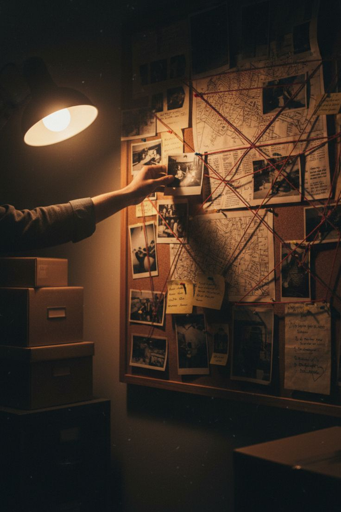

Game investigasi kriminal untuk belajar logika matematika secara interaktif dan menyenangkan.
Setiap hari kita menerima berbagai macam informasi di lapangan. Melalui platform ini, kamu akan dilatih menyaring fakta sejati menggunakan metode penalaran formal diskrit.
Masukkan nama kamu untuk menyimpan berkas progres investigasi.